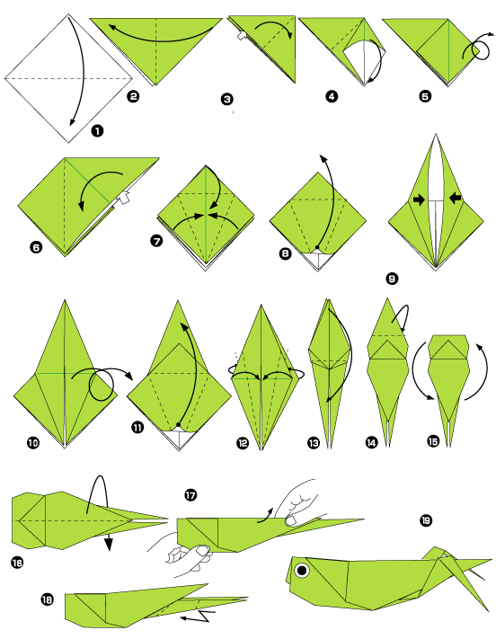

ProTip: You might think Gmail would be the option to pick here, but the better choice is actually Exchange. Setting up your Gmail account with Exchange means your calendars and contacts get synced in addition to your mail.


ProTip: You might think Gmail would be the option to pick here, but the better choice is actually Exchange. Setting up your Gmail account with Exchange means your calendars and contacts get synced in addition to your mail.
If you’ve got a single-dyno app that keeps winding down from inactivity and consequently taking a long time to restart, you can use the free heroku scheduler addon to keep it alive.
heroku addons:add scheduler:standard
heroku addons:open scheduler

Put this in your Rakefile and smoke it. I mean push it.
require "net/http"
desc "Ping app"
task :ping do
url = 'my-app.herokuapp.com'
puts "ping? (#{url})"
r = Net::HTTP.new(url, 80).request_head('/')
puts "pong! (#{r.code} #{r.message})"
end
Sha. Push it. Push it reeeaall good.
News flash! When working on a ruby project, you should prepend every shell command with bundle exec to ensure you’re using the bundled dependencies, and not stuff that’s specific to your environment. But who wants to type bundle exec 500 times a day? Neither I nor David Chelimsky. That’s who.
On my first day at heroku, I was happily setting up my machine for development until a collision between Xcode 4.3.2 and rvm stopped me in my tracks. After much googling, I found this insightful bit on jfire.io:
Ruby on Mac OS Lion is going through a bit of a rough patch, installation-wise. With Xcode 4.2, clang became the default compiler and gcc was no longer included. Unfortunately, this has caused a lot of grief for Rubyists on OS X, because for a while, MRI did not officially support compiling with clang. With the release of 1.9.3-p125, that situation has changed–clang is now officially supported–but there are still some gotchas. This post details my toolchain and process for running MRI 1.9.3 and 1.8.7 on Lion with Xcode 4.3.
Installing GCC with homebrew is what solved it:
brew update
brew install autoconf automake
brew install https://raw.github.com/Homebrew/homebrew-dupes/master/apple-gcc42.rb
rvm get head
rvm install 1.8.7
rvm install 1.9.3-head
Now I know what clang is. Yay.
Factor X in Adam Wiggins’ Twelve-Factor App is dev/prod parity: the idea that your development, staging, and production environments should be as similar as possible to minimize unexpected problems.
For the heroku user, one easy move toward such parity is using postgres in the development environment. In the past I was reluctant to use postgres because it was difficult to install and it was always easier to use MySQL or SQLite because the barrier was lower.
But I’m happy to say that the @mattt’s new project, Postgres.app, soothes that pain: “Open the app, and you have a PostgreSQL server ready and awaiting new connections. Close the app, and the server shuts down.” Here’s an example database configuration that works with Postgres.app right out of the box:
development:
adapter: postgresql
host: localhost
database: dreamboat-development
test: &test
adapter: postgresql
host: localhost
database: dreamboat-test
That’s not all folks. Postgress.app has a great logo too!

Master Po: Do you hear the grasshopper that is at your feet?
Young Caine: Old man, how is it that you hear these things?
Master Po: Young man, how is it that you do not?
